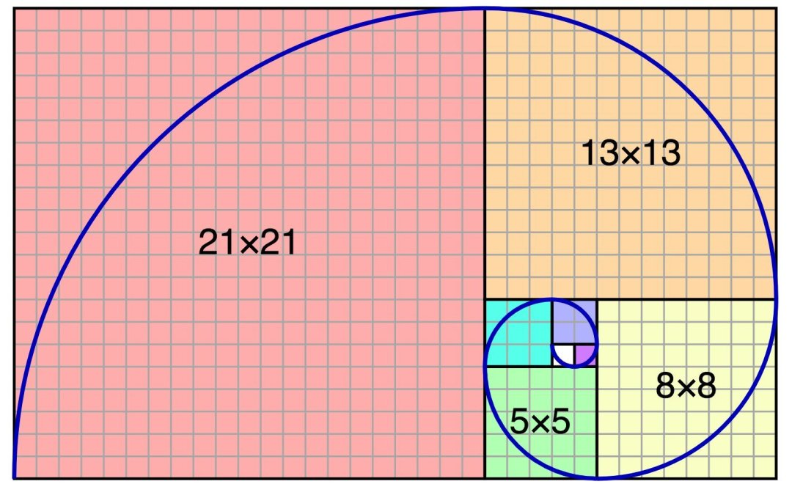
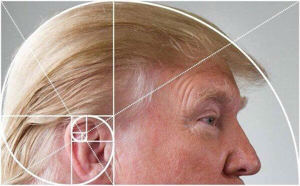
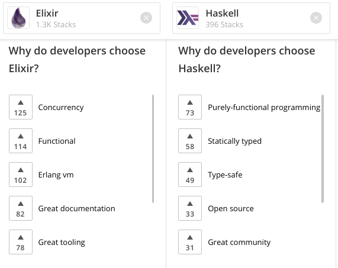
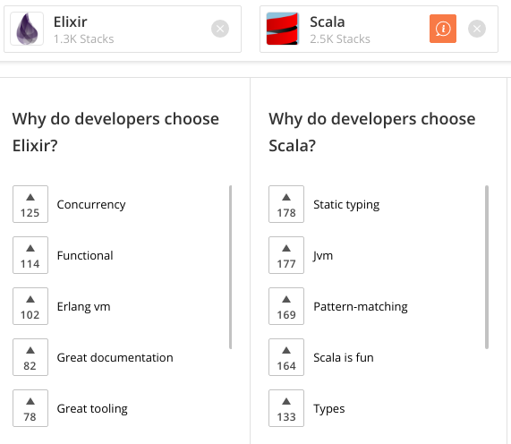

3 Languages in 3 Minutes
The Fibonacci Sequence
in Haskell, Scala and Elixir
(Observations of a Newbie)
roland@tritsch.org / @innolocity
Code Elixir LDN - 2019
https://github.com/rolandtritsch/elixir-ldn-2019
Ready, steady, ...
Roland @ Community
- Roland
- Senior Software Engineer @ Community
- 30 years of building large distributed systems; 8 years of Haskell and Scala; 8 weeks of Elixir
- Community
- Fostering (more) meaningful conversations (again)!!!
- Entire backend is in Elixir
- Globally distributed software engineering team
- Come and find me afterwards to learn more :) ...
Roland @ Community
Roland @ Community
What is Roland's twitter handle?
What is Roland's twitter handle?
@innolocity
(about the velocity of innovation)
In the next 3 Minutes ...
| Haskell | Scala | Elixir | |
|---|---|---|---|
| Development | |||
| Performance | |||
| Observations |
Fibonacci
Fibonacci

Fibonacci
Fibonacci
- Simple - fib n = fib (n - 1) + fib (n - 2)
- Tail-End Recursive - fib n acc = ...
- Fast - Infinite (lazy) list
Simple - Haskell
module Fib where
fib :: Int -> Int
fib 0 = 0
fib 1 = 1
fib n = fib (n - 1) + fib (n - 2)
Simple - Scala
object Fib {
def fib(n: Int): Int = n match {
case 0 => 0
case 1 => 1
case _ => fib(n - 1) + fib(n - 2)
}
}
Simple - Elixir
defmodule Fib do
@moduledoc false
def fib(0), do: 0
def fib(1), do: 1
def fib(n), do: fib(n - 1) + fib(n - 2)
end
Simple - Summary
| Haskell | Scala | Elixir | |
|---|---|---|---|
| Performance | 9.2 | 6.8 | 34.2 |
| Observations | I love Haskell | sbt is slow (compared to mix) | Slow??? |
- fib(42)
- Results in secs; Not (very) sientific :)
- Slow and ... stack will explode :)
- Cannot compute large n-th (int overflow)
TER - Haskell
module Fib where
fib2 :: Int -> Integer
fib2 n = go n (0, 1) where
go 0 (a, _) = a
go n (a, b) = go (n - 1) (b, a + b)
TER - Scala
object Fib {
import scala.math.BigInt
def fib2(n: Int): BigInt = {
def fib2p(n: Int, acc: (BigInt, BigInt)): BigInt = n match {
case 0 => acc._1
case _ => fib2p(n - 1, (acc._2, acc._1 + acc._2))
}
fib2p(n, (0, 1))
}
}
TER - Elixir
defmodule Fib do
@moduledoc false
def fib2(n), do: fib2p(n, {0, 1})
defp fib2p(0, {a, _}), do: a
defp fib2p(n, {a, b}), do: fib2p(n - 1, {b, a + b})
end
TER - Summary
| Haskell | Scala | Elixir | |
|---|---|---|---|
| Performance | 0.012 | 0.115 | 0.008 |
| Observations | Lazy :) | Slowest :) | No BigInt :) |
- fib2(10000)
- Much faster (in general)
- Stack does not explode :)
Lazy - Haskell
module Fib where
fib3 :: Int -> Integer
fib3 n = fibs !! n where
fibs = 0 : 1 : next fibs where
next (a : t@(b:_)) = (a + b) : next t
Lazy - Scala
object Fib {
import scala.math.BigInt
def fib3(n: Int): BigInt = {
def fibs(a: BigInt, b: BigInt): Stream[BigInt] = a #:: fibs(b, a + b)
fibs(BigInt(0), BigInt(1))(n)
}
}
Lazy - Elixir
defmodule Fib do
@moduledoc false
def fib3(n), do: fibs() |> Enum.at(n)
defp fibs(), do: Stream.unfold({0, 1}, fn {a, b} -> {a, {b, a + b}} end)
end
Lazy - Summary
| Haskell | Scala | Elixir | |
|---|---|---|---|
| Performance | 0.008 | 0.081 | 0.012 |
| Observations | Using timeItT | Roll your own | Using :time.tc/1 |
- fib3(10000)
- About as fast as TER
- Elegant :)
Summary - Summary
| Haskell | Scala | Elixir | |
|---|---|---|---|
| Build | stack, hackage, intero, ... | sbt, mvn, ensime, ... | mix, hex, alchemist, ... |
| Performance | 9.2/0.012/0.008 | 6.8/0.115/0.081 | 34.2/0.008/0.012 |
| Observations | Like types | Like JVM | Like processes |
Summary - Summary
Source: stackshare.io
Summary - Summary
Source: stackshare.io